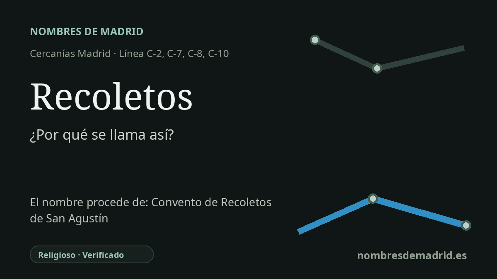

Publicado el · Investigación de Nombres de Madrid · Cómo verificamos cada origen · 6 fuentes consultadas
Respuesta rápida
La estación de Recoletos debe su nombre al paseo de Recoletos. El paseo conserva la memoria de un convento de agustinos recoletos fundado en 1592 en el entorno que hoy ocupa en parte la zona de la Biblioteca Nacional.
La historia del nombre
El apeadero de Cercanías llamado **Recoletos** toma su nombre de forma directa del paseo de Recoletos, el bulevar situado sobre la estación entre Cibeles y Colón. La página de Renfe ubica la estación en ese paseo, y una nota de la propia Renfe sobre nombres de estaciones indica que tanto el paseo como el apeadero proceden del antiguo convento de Recoletos de San Agustín.
Detrás del nombre urbano moderno estaba el **Convento de Agustinos Recoletos**, fundado en 1592 por Eufrasia de Guzmán, princesa de Ascoli. La definición de la RAE ayuda a entender la palabra: *recoleto* se aplica especialmente a un religioso agustino, o a su orden, que practica una observancia más estricta. Es decir, Recoletos no es aquí un apellido, sino el recuerdo de una comunidad religiosa.
La zona estaba todavía en el borde del Madrid de la Edad Moderna cuando apareció el convento. La investigación histórica sobre el paisaje del eje Prado-Recoletos-Castellana describe la prolongación septentrional del Prado de San Jerónimo como Prado de los Agustinos Recoletos porque discurría por terrenos vinculados al convento fundado en 1592. La formación del paseo no se explica solo por las huertas o jardines conventuales: también hubo obras municipales de expropiación, nivelación, arbolado y conducción de aguas.
El convento no llegó vivo al siglo XIX avanzado. Memoria de Madrid registra que fue derribado tras la desamortización de 1836 y que su solar se transformó después; hoy el entorno se asocia a grandes edificios culturales como la Biblioteca Nacional y el Museo Arqueológico Nacional, además de palacios decimonónicos y fundaciones culturales del paseo.
La estación conserva, por tanto, un nombre en capas. En la red es una parada céntrica de Cercanías en el corredor Atocha-Chamartín; en la ciudad es el nombre de un paseo; en la historia es un nombre religioso. La cadena mejor documentada es: estación -> paseo de Recoletos -> antiguo convento de agustinos recoletos.